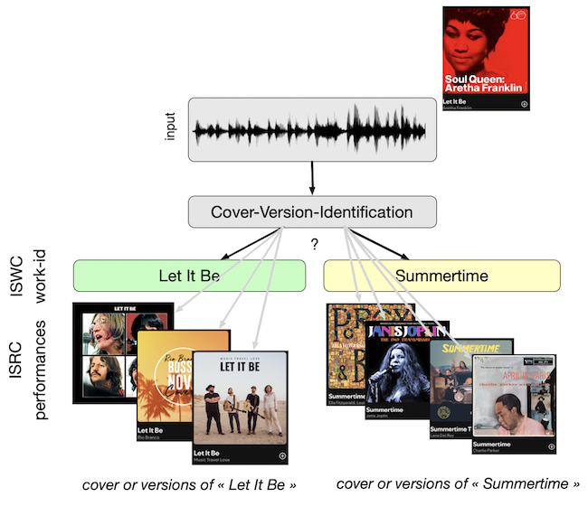
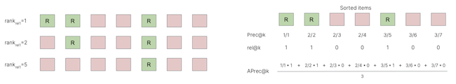
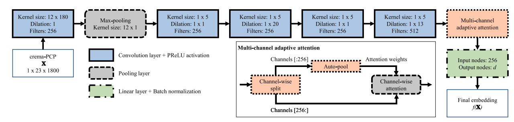
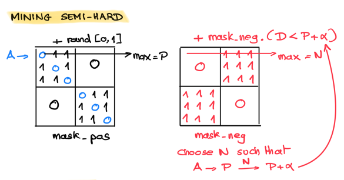
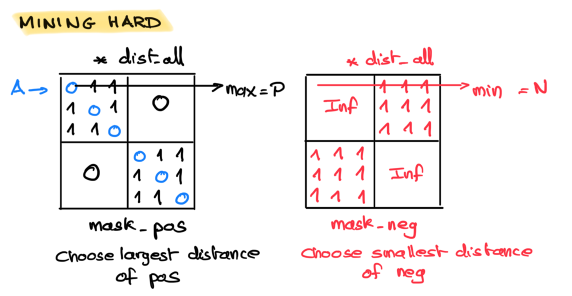

Cover Detection#
Goal of the task ?#
Cover(Version) Detection(Identification) is the task aiming at detecting if a given music track is a cover/version of another track. For example detecting that this track performed by Aretha Franklin is a cover/version of the work-id “Let It Be”, composed by the Beatles and also performed in Beatles. They are covers/versions of the same composition. We said that they are performances of the same work-id (or ISWC). The group of songs that are identified as cover versions of each other is often denoted as a “clique”.

Considering the very large number of possible work-id (there exist millions of compositions), it is not possible to solve this as a classification (multi-class) problem (too many classes). To solve this, the approach commonly used is to have a reference dataset \(R\), containing tracks \(\{r_i\}\) with known work-id, and to compare the query track \(q\) to each track \(r_i\) of the reference dataset. If \(q\) is similar to one track of the dataset (i.e. the distance \(d(q,r_i)\) is small), we decide that \(q\) is a cover of \(r_i\) and they share the same work-id. This involves setting a threshold \(\tau\) on \(d(q,r_i)\). If \(d(q,r_i)<\tau\) we decide they are cover of each other.
In practice to evaluate the task, another problem is considered. The distances between \(q\) and all \(r_i \in R\) are computed and ranked. If we denote by \(w(.)\) the function that gives the work-id of a track, we then check at which position in the ranked list \(w(r_i)==w(q)\). We can then use the ranking/recommendation performance metrics.
Fore more details, see the very good tutorial on “Version Identification in the 20s”
How is the task evaluated ?#
We rank the distances (from the smallest to the largest) and evaluate what is the position in this ranked-list \(A\) of the first match with the query.
If we denote by
\(A\) the ranked list (of length \(K\)) corresponding to a query \(q\)
\(a_i\) its \(i^{th}\) element,
\(A^k=\{a_i\}_{i \; \in \; 1 \ldots k}\) the \(k\) first ranked items,
\(rel(q,a_i)\) the relevance of items \(a_i\), i.e. whether the item \(a_i\) has the same work-id than \(q\): \(w(a_i)==w(q)\).
We then compute the usual ranking metrics:
MR1: Mean Rank (lower better): it is the mean (the average over queries \(q\)) of the rank of the first correct result
\(MR1=\mathbb{E}_{q \in Q} \arg\min_i \{ rel(q,a_i)=1 \}\)MRR1: Mean Reciprocal Rank (higher better): it is the mean (…) of 1/rank of the first correct result
\(MRR1=\mathbb{E}_{q \in Q} \arg\max_i \frac{1}{ rel(q,a_i)=1}\)Precision @ k (higher better): the number of correct results in the first \(k\) elements of the ranked list
\(P(k) = \frac{1}{k} \sum_{i=1}^k rel(q,a_i)\)mAP: mean Average Precision (higher better): same as for multi-label classification
\(AP^q = \frac{1}{K} \sum_{k=1}^K P(k) \; rel(q,a_k)\)

def F_mean_rank(relevance):
return relevance.nonzero()[0][0]+1
def F_mean_reciprocal_rank(relevance):
return 1./ F_mean_rank(relevance)
def F_precision_at_k(relevance, k):
return np.mean(relevance[:k] != 0)
def F_average_precision(relevance):
out = [F_precision_at_k(relevance, k + 1) for k in range(relevance.size) if relevance[k]]
return np.mean(out)
Other metrics are also commonly used such as the Cumulative Gain, (CG) Discounted Cumulative Gain (DCG), Normalised DCG.
Some popular datasets#
A (close to) exhaustive list of MIR datasets is available in the ismir.net web site.
The first dataset proposed for this task was the cover80 datasets containing 80 different work-id (or cliques) with 2 versions each.
Since then, much larger datasets have been created mostly relying on the data provided by the collaborative website SecondHandSongs. For our implementations, we will consider the two following datasets (notes that those do not provide access to the audio but to the already extracted CREMA audio features (12-dimension)):
Cover-1000: 996 performances of 395 different works
DA-TACOS: 15.000 performances of 3000 different works
How we can solve it using deep learning#
The usual way to solve the cover version problem is to develop an algorithm that allows to compute a distance between two tracks \(q\) and \(r_i\), the distance should relates to their “coverness” (how much \(q\) and \(r_i\) are two performances of the same work-id).
Before the rise of deep learning, the usual way to compute this distance was to compute the cost of a DTW alignement between the sequence of chroma of \(q\) and the one of \(r_i\). This was however very costly in terms of computation time and prevented the algorithm to scale.
Today, the common deep learning technique used is based on metric learning, i.e. we train a neural network \(f_{\theta}\) such that the resulting projections of \(q\), \(f_{\theta}(q)\) can be directly compared (using Euclidean distance) to the projections of \(r_i\), \(f_{\theta}(r_i)\). In this case, only the projections (named embedding) of the elements of the reference-set \(R\) are stored and the comparison simply reduce to the computation of Euclidean distances. Various approaches can be used for metric learning, but the most common is the triplet loss.
For the proposal code we will used the MOVE model [YSerraGomez20] and follow its implementation.

We illustrate a deep learning solution to this problem in the following notebook and using the configuration.
Online Triplet mining explained#
The online mining of the triplets is actually not a mining of the best data to feed into the model since all data are fed into the model. In online mining, batch of data are selected blindly and all send to the model to obtain the embeddings \(e_i=f_{\theta}(x_i), i \in \{1, \ldots, batch\_size\}\). The online mining then uses those embeddings to select the ones that will be used to form the triplets A,P,N which are then used to compute the loss (which is to be minimized by SGD) and only those selected will be used for the loss.
Random mining#
For each anchor A (row), we select randomly a positive (among the mask_pos) and a negative (among the mask_neg).

def triplet_mining_random(dist_all, mask_pos, mask_neg):
"""
Performs online random triplet mining
"""
# selecting the positive elements of triplets
# we consider each row as an anchor and takes the maximum of the masked row (mask_pos) as the positive
_, sel_pos = torch.max(mask_pos.float() + torch.rand_like(dist_all), dim=1)
dists_pos = torch.gather(input=dist_all, dim=1, index=sel_pos.view(-1, 1))
# selecting the negative elements of triplets
# we consider each row as an anchor and takes the maximum of the masked row (mask_neg) as the negative
_, sel_neg = torch.max(mask_neg.float() + torch.rand_like(dist_all), dim=1)
dists_neg = torch.gather(input=dist_all, dim=1, index=sel_neg.view(-1, 1))
return dists_pos, dists_neg
Semi-hard mining#
For each anchor A (row), we select randomly a positive (among the mask_pos) and a negative (among the mask_neg that statisfy D_neg < D_pos + margin).

def triplet_mining_semihard(dist_all, mask_pos, mask_neg, margin):
"""
Performs online semi-hard triplet mining (a random positive, a semi-hard negative)
"""
# --- the code below seems wrong
# --- need criteria
# 1) should be negative (should be from a different work-id)
# 2) should be P < N < P+margin
# selecting the positive elements of triplets
# we consider each row as an anchor and takes the maximum of the masked row (mask_pos) as the positive
_, sel_pos = torch.max(mask_pos.float() + torch.rand_like(dist_all), dim=1)
dists_pos = torch.gather(input=dist_all, dim=1, index=sel_pos.view(-1, 1))
# selecting the negative elements of triplets
_, sel_neg = torch.max(
(mask_neg
+ mask_neg * (dist_all < (dists_pos.expand_as(dist_all)).long()+margin)).float()
+ torch.rand_like(dist_all),
dim=1)
dists_neg = torch.gather(input=dist_all, dim=1, index=sel_neg.view(-1, 1))
return dists_pos, dists_neg
Hard mining#
For each anchor A (row), we select (among the mask_pos) the positive with the largest distance and the negative (among the mask_neg) with the smallest distance.

def triplet_mining_hard(dist_all, mask_pos, mask_neg, device):
"""
Performs online hard triplet mining (both positive and negative)
"""
# --- the code below seems wrong
# --- need criteria
# 1) should be negative (from a different work-id)
# 2) should be N < P
# selecting the positive elements of triplets
# --- for each anchor (row) we take the positive with the largest distance
_, sel_pos = torch.max(dist_all * mask_pos.float(), 1)
dists_pos = torch.gather(input=dist_all, dim=1, index=sel_pos.view(-1, 1))
# modifying the negative mask for hard mining (because we will use the min)
# --- if mask_neg==0 then inf
# --- if mask_neg==1 then 1
true_value = torch.tensor(float('inf'), device=device)
false_value = torch.tensor(1., device=device)
mask_neg = torch.where(mask_neg == 0, true_value, false_value)
# selecting the negative elements of triplets
# --- for each anchor (row) we take the negative with the smallest distance
_, sel_neg = torch.min(dist_all + mask_neg.float(), dim=1)
dists_neg = torch.gather(input=dist_all, dim=1, index=sel_neg.view(-1, 1))
return dists_pos, dists_neg
```
Experiments:
- run MOVE on Cover1000
- run MOVE on DataCOS
- run MOVE on Cover1000, replace AutoPoolWeightSplit by Mean, by SoftmaxWeight, by AutoPoolWeight